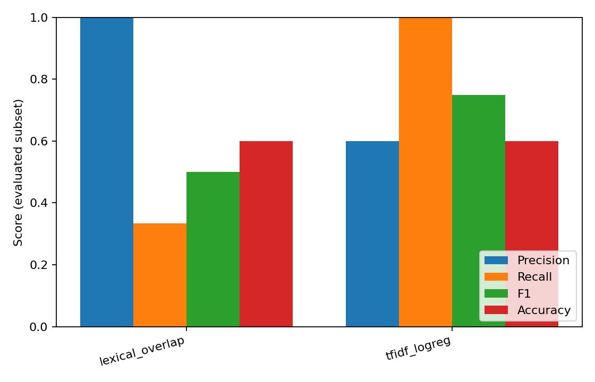
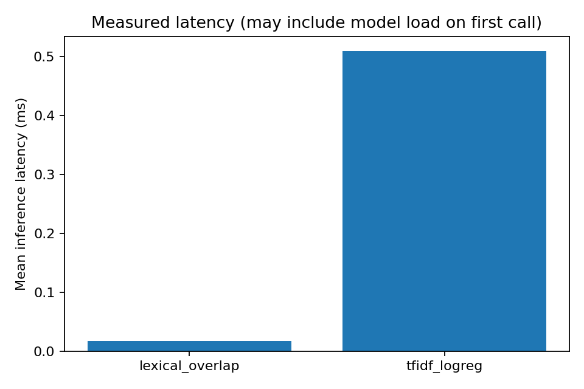

# HalluBench — Findings Report
Experiment status: **finished**
Held-out examples selected: **6**
Evaluation tier: **fixture_smoke** (fixture smoke is NOT a public benchmark)
Test-ID SHA-256: `2fe0f8b170e80beff99e791f2b787375dbaab4a9614ba622d575ac9625dcc4de`
## Objective and interpretation
Measures agreement between detector predictions and dataset-defined, evidence-relative labels.
It does not establish open-world truth, claim completeness, or detector reliability on unseen domains.
HaluEval 'hallucinated' is a constructed coarse label, not an adjudicated contradicted-claim label.
## Observed performance
| Detector | Evaluated | Coverage | Hallucination precision | Recall | F1 | Accuracy | Mean latency (ms) |
|---|---:|---:|---:|---:|---:|---:|---:|
| lexical_overlap | 5 | 1.0000 | 1.0000 | 0.3333 | 0.5000 | 0.6000 | 0.02 |
| tfidf_logreg | 5 | 1.0000 | 0.6000 | 1.0000 | 0.7500 | 0.6000 | 0.51 |
## Data eligibility and failure modes
### lexical_overlap
- Eligible reference labels: 5; correctly excluded unknown-reference labels: 1.
- Processing status counts: `{'ok': 5, 'abstained': 0, 'missing_evidence': 1, 'error': 0, 'unavailable': 0}`; coverage uses eligible denominator, never converts failures into predictions.
- Observed false positives/negatives in stored errors: 2; suggested categories need human review.
- New-inference wall time: 0.000s (resumed runs exclude reused inferences).
- By task: dialogue=0.000 F1 (n=1), qa=0.000 F1 (n=2), summarization=1.000 F1 (n=2)
- By dataset: TOY_manually_written_unit_fixture=0.500 F1 (n=5)
- By generator: unknown=0.500 F1 (n=5)
### tfidf_logreg
- Eligible reference labels: 5; correctly excluded unknown-reference labels: 1.
- Processing status counts: `{'ok': 6, 'abstained': 0, 'missing_evidence': 0, 'error': 0, 'unavailable': 0}`; coverage uses eligible denominator, never converts failures into predictions.
- Observed false positives/negatives in stored errors: 2; suggested categories need human review.
- New-inference wall time: 0.003s (resumed runs exclude reused inferences).
- By task: dialogue=1.000 F1 (n=1), qa=0.667 F1 (n=2), summarization=0.667 F1 (n=2)
- By dataset: TOY_manually_written_unit_fixture=0.750 F1 (n=5)
- By generator: unknown=0.750 F1 (n=5)
## Paired uncertainty (grouped bootstrap)
- lexical_overlap__vs__tfidf_logreg: {'status': 'estimated', 'unit': 'source/parent group', 'n_groups': 5, 'n_pairs': 5, 'iterations': 250, 'seed': 17, 'metric': 'hallucination F1 delta A-B', 'observed_delta': -0.25, 'ci95_percentile': [-0.8888888888888888, 0.4285714285714286], 'warning': 'Exploratory; no multiplicity correction, CI unstable for few source groups'}
## Generated artifacts
- `summary.json`, `experiment.json`, `dataset_quality.json`: experiment metadata and quantitative results.
- `predictions_*.jsonl`, `errors_*.jsonl`: all returned statuses and stored errors.
- `confusion_*.png`, `detector_comparison.png`, `latency.png`; optional reliability, score distribution, PR curve and descriptive threshold-sensitivity plots.
## Limits and required next research
- Unsupported is not logically false; neutral NLI outputs cannot prove incorrectness.
- Response labels are not automatically atomic-claim labels, and sentence splitting is approximate.
- API/self-reported confidence is not calibrated probability; no costs are inferred without usage/prices.
- Dataset construction artifacts, distribution shift and correlated sources constrain generalization.
- Bootstrap intervals are exploratory; significance and universal superiority are NOT claimed.
- Missing model or data access produces no evaluation rather than a zero score.

